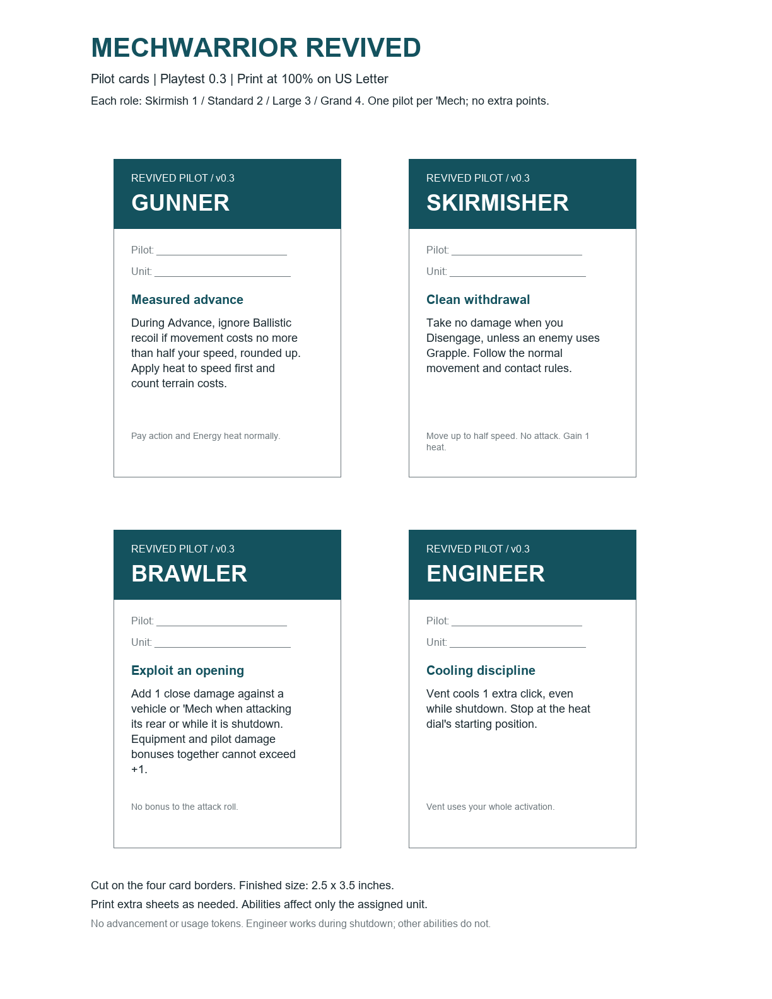

Give each ’Mech one pilot before deployment; its cost includes the pilot allowance. Each role is limited to 1 in Skirmish, 2 in Standard, 3 in Large Battle, or 4 in Grand Battle. See the force chart. Write the ’Mech’s ID on its card.
Print the cards at 100% on US Letter paper. Each card is 2.5 × 3.5 inches. One sheet covers Skirmish; print up to two for Standard, three for Large Battle, or four for Grand Battle. View the sheet.

| Pilot | Ability |
|---|---|
| Gunner | During Advance, ignore Ballistic recoil if movement costs no more than half your speed, rounded up. Apply heat to speed first and count terrain costs. |
| Skirmisher | Take no damage when you Disengage, unless an enemy uses Grapple. Follow the normal movement and contact rules. |
| Brawler | Add 1 close damage against a vehicle or ’Mech when attacking its rear or while it is shutdown. Equipment and pilot damage bonuses together cannot exceed +1. |
| Engineer | Vent cools 1 extra click, even while shutdown. Stop at the heat dial’s starting position. |
Abilities work whenever their conditions are met; there are no use counters. They affect only the assigned ’Mech and remain through combat-dial damage. Pilots cannot transfer and are lost when their ’Mech is destroyed. Only Engineer works during shutdown.
Gunner’s limit covers an ordinary half-speed Advance, including a Jump within that allowance. Gunner removes recoil, not cover or heat, and cannot let Rockets fire during Advance. No pilot adds an attack or activation. Skirmisher, Evade, and Jump Jets waive the same Disengage damage; they do not stack, and Grapple overrides them.
Gunner: At speed 8, an Advance through 2 inches of woods costs the full 4-inch allowance. Gunner removes Ballistic recoil from the following shot.
Skirmisher: A ’Mech leaves ordinary enemy contact without damage, then moves up to half speed. Against active Grapple it pays the normal 1 damage.
Brawler: Damage 3 becomes 4 against an enemy vehicle’s rear. If Brawling also applies, the shared +1 cap keeps the damage at 4.
Engineer: Vent rating 2 cools 3 clicks. If the ’Mech is only two clicks from Start, it stops there.
Use these cards without original pilots, gear, or advancement rules. Record their effects before changing the shared pilot allowance in the points formula.
